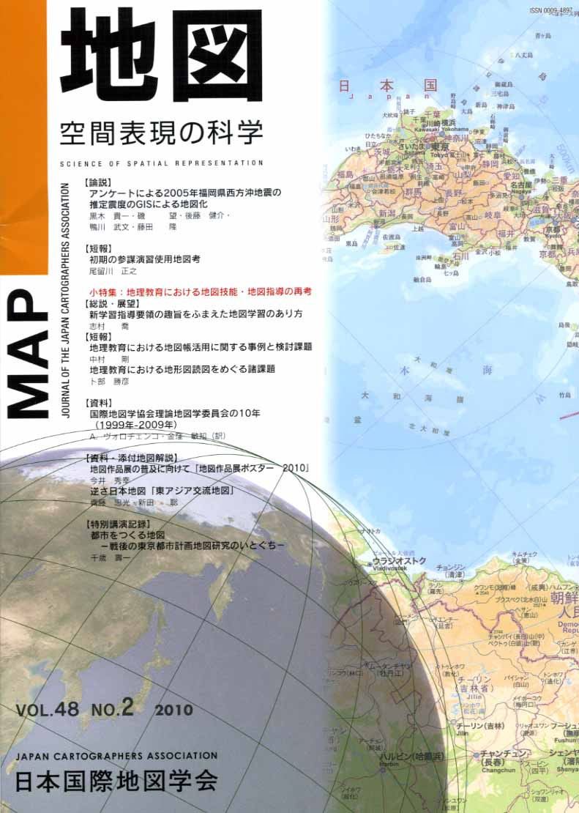
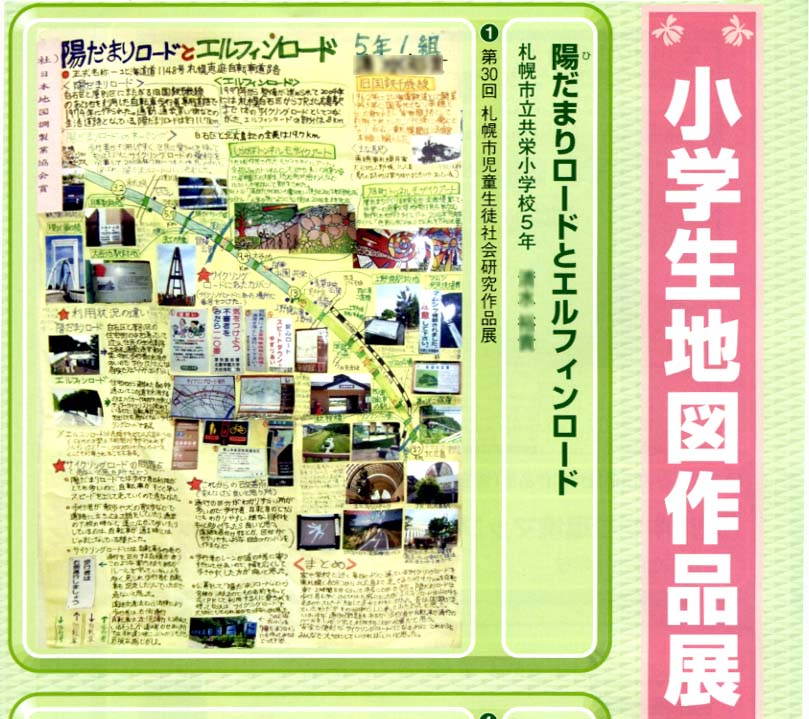
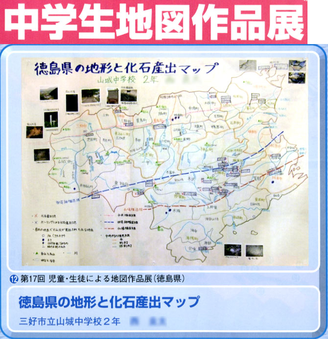
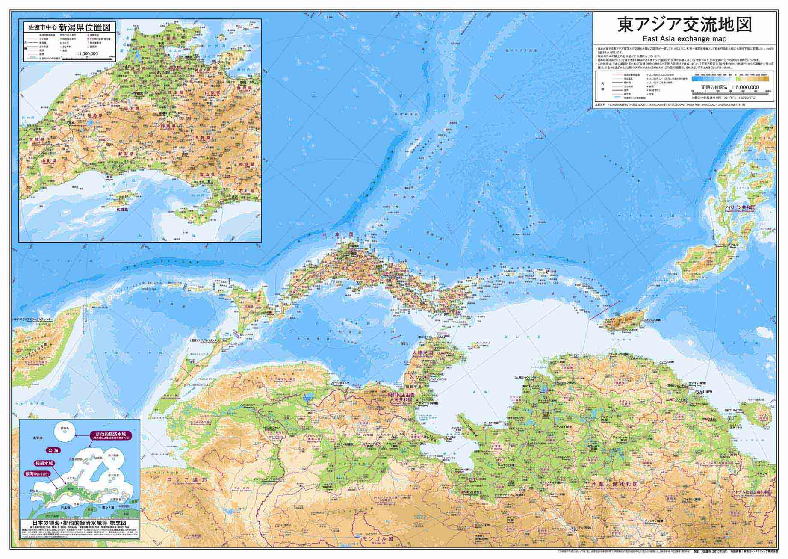

| 最 新 号 | バックナンバー | 添付地図目録 | 投 稿 規 程 |
Vol.48 No.2 （通巻１９０号） ２０１０年
| 【論説】 | アンケートによる2005年福岡県西方沖地震の推定震度のGISによる地図化 | 黒木貴一・磯 望・後藤健介・鴨川武文・藤田 隆 |
| キーワード：2005年福岡県西方沖地震、アンケート調査、推定震度、地理情報システム | ||
| 【短報】 | 初期の参謀演習使用地図考 | 尾留川正之 |
| キーワード：メッケル、ローマ字の地形図類、急製土浦近傍図、駿豆地方仮製地形図 | ||
| 小特集 地理教育における地図技能・地図指導の再考 | ||
| 【総説・展望】 | 新学習指導要領の趣旨をふまえた地図学習のあり方 | 志村 喬 |
| キーワード：地理教育、地図教育、社会科、地理歴史科、地球儀 | ||
| 【短報】 | 地理教育における地図帳活用に関する事例と検討課題 | 中村 剛 |
| キーワード：地理教育、学校地図帳、空間的思考、地理的技能、地図利用スキル | ||
| 地理教育における地形図読図をめぐる諸課題 | 卜部勝彦 | |
| キーワード：地理教育、地理的技能、地形図読図 | ||
| 【資料】 | 国際地図学協会理論地図学委員会の10年（1999年−2009年） | Ａ．ヴォロチェンコ・金窪敏知（訳） |
| キーワード：国際地図学協会、専門委員会、理論地図学 | ||
| 【資料・添付地図解説】 | 地図作品展の普及に向けて「地図作品展ポスター 2010」 | 今井秀幸 |
| キーワード：地図作品展、児童・生徒の手作り地図、地図・地理普及 | ||
| 逆さ日本地図 「東アジア交流地図」 | 齊藤忠光・新田 聡 | |
| キーワード：逆さ日本地図、佐渡市、日本国際学会地方大会「地図の島ｉｎ佐渡」 | ||
| 【特別講演記録】 | 都市をつくる地図 −戦後の東京都市計画地図研究のいとぐち− | 千歳壽一 |
| 【特別会員のページ】 | 有限会社ジェイマップ | |
| ジオカタログ株式会社 | ||
| 【学会記事】 | ||
| 【添付地図】 | 地図作品展ポスター2010 | |
| 東アジア交流地図 | ||
|
≪No.48 No.2 表紙≫ |
|
|  |
|
|
|
≪No.48 No.2 添付地図≫ |
| 
  本図を許可なく複製・利用することを禁止します。
|